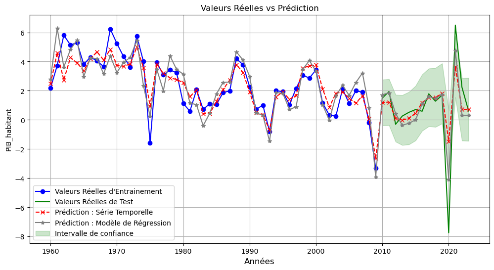
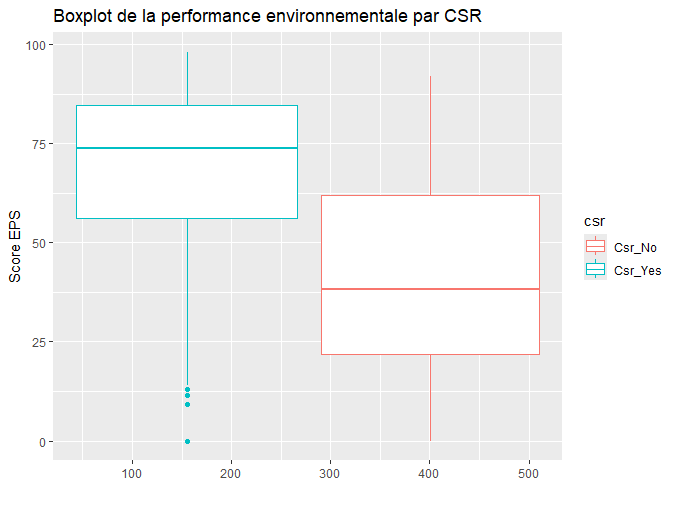

Bienvenue sur mon Portfolio
Expériences Professionnelles
Observability Data Analyst (Stage)
Département IT — Team Observability (03/2026 - 08/2026)
IVALUA — Massy, France
- Analyse & Diagnostic : Analyse des métric, logs systèmes et applicatifs pour identifier les problèmes potentiels sur la solution Ivalua Buyer et résolution d'incidents complexes.
- Monitoring & Alerting : Configuration et mise à disposition de tableaux de bord dynamiques et d'alertes de monitoring applicatif pour garantir la visibilité opérationnelle.
- Innovation LLM : Développement et intégration d'agents LLM pour l'analyse automatisée de logs et l'aide au diagnostic.
- Fiabilité & Performance : Application des meilleures pratiques d'observabilité pour maximiser la disponibilité et la fiabilité des systèmes de production.
- Communication : Coordination et communication transverse avec les parties prenantes internes sur le suivi et la résolution des problèmes en cours.
Outils : Python, SQL Server, Grafana, Datadog
Consultant Data – Projet Tutoré (EcoVertaConsul’t X Université Paris 13)
(10/2025 – 02/2026)
EcoVertaConsul’t, Transition énergétique & ENR — Paris et périphérie, France
- Extraction et exploitation de données publiques et énergétiques (INSEE, ADEME, IGN, cadastre solaire).
- Développement d’un modèle de scoring clients ENR (0–100) pour prioriser les opportunités commerciales (Loi APER).
- Conception de dashboards Power BI avec cartographie interactive pour l’aide à la décision.
Outils : Python, Power BI
Data Analyst (Stagiaire)
Pôle Acquisition et Commercial (05/2025 - 08/2025)
Aliive, pour une alimentation positive — Neuilly-sur-Seine, France
- Analyse de données multi-sources (CRM, campagnes, données commerciales).
- Mise en place et suivi des KPI de performance marketing (CPA, CPC, CPV, taux de recrutement).
- Création de dashboards Power BI interactifs pour le suivi opérationnel et décisionnel.
- Automatisation de reporting : réduction du temps de 4 jours → 2 jours.
- Contribution à la stratégie digitale (campagnes d’influence & SEO).
Outils : Power BI, Excel, Google Ads, Meta
Data Analyst Assistant Acheteur (Stage)
Direction Logistique Pharmaceutique — Service Achats (11/2022 - 08/2023)
Nouvelle Pharmacie de la Santé Publique de Côte d’Ivoire — Abidjan
- Extraction, nettoyage et analyse de données.
- Création, calcul et suivi d’indicateurs clés (prix, stock, disponibilité, délais).
- Conception de dashboards Power BI.
- Automatisation et optimisation des processus achat.
- Documentation hebdomadaire et recommandations stratégiques.
Outils : SQL, Power BI, Excel, Access
Projets Data
Classic Models – Analyse commerciale et optimisation des ventes (SQL & Power BI)

Contexte & Objectif : Analyser et optimiser les opérations commerciales d’une entreprise de vente de modèles réduits afin de détecter les tendances clés, comprendre la dynamique des ventes et améliorer la performance des employés.
-
Méthodes : Analyse multidimensionnelle (produits, commandes, clients, employés) via requêtes SQL.
Connexion de la base de données SQL à Power BI pour la modélisation et la création d'un Tableau de bord interactif de suivi des KPIs. -
Résultats Clés & Impact : Ce travail a permis d'identifier rapidement les produits phares et les zones stratégiques, de suivre la performance commerciale ainsi que la dynamique des stocks et la charge de travail des employés.
Le Dashboard Power BI opérationnel fournit aux managers un outil de suivi en temps réel pour des décisions stratégiques rapides.
Outils : SQL, Power BI
Voir le projet détaillé →Prédiction du Churn Bancaire (Python : Scikit-learn)

Contexte & Objectif : Anticiper le départ des clients bancaires (churn) afin de mettre en place des actions de fidélisation ciblées et optimiser les campagnes marketing.
-
Méthodes : Prétraitement des données (encodage, standardisation, gestion du déséquilibre des classes).
Comparaison de modèles (Régression Logistique, Random Forest). Modèle final : Random Forest optimisé avec hyperparamètres ajustés et sur-échantillonnage de la classe churner(minoritaire).
-
Résultats Clés & Impact : Accuracy de 86% ; F1-score sur les clients à risque (churners) de 62%.
Ce modèle permet l'identification des clients les plus à risque, améliorant la rétention client grâce à des actions marketing ciblées.
Outils : Python : Pandas, Matplotlib, Scikit-learn
Voir le projet détaillé →Segmentation Client (Python : Scikit-learn)

Contexte & Objectif : Identifier des groupes de clients distincts pour optimiser les campagnes marketing et améliorer la fidélisation dans un environnement retail.
-
Méthodes : Prétraitement des données. Analyse RFM (Récence, Fréquence, Montant) et ACP (Analyse en Composantes Principales).
Clustering non supervisée par l'algorithme K-Means. -
Résultats Clés & Impact : Définition de 4 segments clients (Inactifs, Actifs de classe moyenne, VIP/Champions, Anciens peu engagés).
Analyse des comportements et recommandations spécifiques pour chaque segment.
Impact : Fournit une base solide pour des stratégies marketing personnalisées, un ciblage précis et des campagnes de fidélisation efficaces.
Outils : Python : Pandas, Matplotlib, Scikit-learn(PCA, KMeans)
Voir le projet détaillé →Tableau de bord RH – Gestion des Ressources Humaines (Power BI)

Contexte & Objectif : Développement d’un dashboard interactif RH pour centraliser et visualiser les informations clés des collaborateurs, afin de faciliter la prise de décision stratégique RH.
- Méthodes & Outils : Power BI pour les visualisations interactives. Utilisation de Python et Excel pour le traitement des données et la génération d’images fictives.
-
Résultats Clés & Impact : KPIs principaux affichés : effectif total, répartition H/F, promotions, départs à la retraite, performance et satisfaction. Le dashboard est interactif, permettant une exploration par employé et département.
Outil simple et visuel pour piloter les données RH et soutenir les décisions stratégiques sans nécessiter de compétences techniques avancées.
Outils : Power BI, Excel, Python
Voir le projet détaillé →THE SQLer – Agent IA pour requêtes SQL et visualisations (Python, Groq, Llama-3.1 & Streamlit)

Contexte & Objectif : Développer une application interactive et rapide pour permettre aux utilisateurs d'interroger une base de données MySQL en langage naturel et obtenir des visualisations automatisées. THE SQLer vise à démocratiser l’accès aux données et un grain de productivité grâce aux outils d'IA générative.
- Méthodes : Base de données MySQL (Classicmodels). Utilisation du modèle IA Llama-3.1-8b via Groq pour générer et exécuter les requêtes SQL. Visualisations automatiques avec matplotlib. Application web développée avec Streamlit. THE SQLer vise à démocratiser l’accès aux données.
- Résultats Clés & Impact : Conversion réussie des questions en langage naturel en requêtes SQL optimisées. Affichage des résultats sous forme de tableaux et graphiques dynamiques. Export des données et visualisations pour usage métier. Accélération de la prise de décision et simplification de l’analyse pour les non-experts.
Outils : MySQL, Python, sqlalchemy, Groq, Llama-3.1 & Streamlit
Voir l'app en démo →Prédiction de la croissance économique en France (1960–2023) (Python : Séries temporelles)
Contexte & Objectif : Projet académique visant à prévoir le PIB par habitant en France à partir d’indicateurs démographiques et macroéconomiques, et à identifier les facteurs déterminants de la croissance.
- Méthodes : Analyse exploratoire des variables macroéconomiques. Modèles de régression multiple. Utilisation des séries temporelles via le modèle SARIMAX.
- Résultats Clés & Impact : La démographie seule n’explique pas la croissance. L’investissement (FBCF) et le taux d’épargne sont identifiés comme les meilleurs prédicteurs du PIB. Utilisation des modèles prédictifs pour l’analyse économique et la prise de décision basée sur des données macroéconomiques.
Outils : Python : Scikit-learn, Statsmodels, Pandas
Voir le projet détaillé →Green Paris : Visualisation des arbres plantés à Paris (Excel & Power BI)

Contexte & Objectif : Création d'un tableau de bord interactif pour présenter la répartition et l’évolution des arbres plantés à Paris à partir des données ouvertes, mettant en valeur l'engagement environnemental de la Ville.
-
Méthodes & Outils : Collecte et préparation des données Open Data (CSV). Power BI pour la création du tableau de bord (visualisation, filtrage, cartographie interactive).
Outils : Excel & Power BI -
Résultats Clés & Impact : Affichage des indicateurs clés (nombre total d’arbres, projets réalisés, aire moyenne). Cartographie interactive et classement des Top 5 arrondissements.
Impact : Outil d'analyse visuelle claire et synthétique facilitant l’identification des zones les plus actives en termes de projets de végétalisation pour la prise de décision.
Vélib’ Métropole – Real-Time Data Visualization Dashboard (Power BI & Open Data API)

Contexte & Objectif : Concevoir un tableau de bord interactif Power BI basé sur l’API officielle de Vélib’ Métropole pour visualiser en temps réel la disponibilité, la capacité et le taux d’occupation des stations dans la métropole parisienne.
-
Méthodes & Outils : Connexion à l'API GBFS (General Bikeshare Feed Specification). Calcul du taux d’occupation en temps réel. Création d'une carte interactive avec code couleur (mécanique/électrique) et intégration de liens Google Maps.
Outils : Power BI -
Résultats Clés & Impact : Dashboard interactif affichant le taux d’occupation global, le nombre total de vélos et la répartition mécanique/électrique. Expérimentation réussie d'une approche de Real-Time Data Visualization sur des données externes.
Impact : Outil dynamique d'aide à la décision et à l'information pour les usagers et les gestionnaires du service Vélib’.
Analyse de la performance environnementale – EURO STOXX600 (R/Rstudio)
Contexte & Objectif : Identifier les facteurs déterminants de la performance environnementale des entreprises cotées sur l’EURO STOXX600 et comprendre pourquoi certaines sont plus performantes que d’autres.
- Méthodes : Analyse exploratoire des données ESG. Réduction de dimension via ACP (Analyse en Composantes Principales). Modélisation statistique par régression linéaire.
-
Résultats Clés & Impact : Identification des variables ESG les plus influentes et mise en évidence des écarts de performance entre secteurs.
Ce projet se situe à l’intersection de la finance durable et de la data science, fournissant des insights exploitables pour la stratégie RSE des entreprises.
Outils : R, RStudio
Voir le projet détaillé →Certifications
- Dataiku Core Designer (Dataiku) — Janvier 2026 (Voir le Certificat 📄) 🔒 Authenticité
- Intelligence Artificielle (FORCE-N & Mastercard Foundation) — Université Cheikh Hamidou Kane (mars 2024) (Voir le Certificat 📄) 🔒 Authenticité
- Traitement de données (FORCE-N & Mastercard Foundation) — Université Cheikh Hamidou Kane (Août 2024) (Voir le Certificat 📄) 🔒 Authenticité